雑学アーカイブ
気になったことを、調べて、短くまとめる。
暮らしの制度やお得、おでかけ、学び、仕事の道具まで。 公的機関・公式サイトの情報をもとに、要点から読める形でまとめています。
- 事実には出典つき
- 調査日を明記
- 要点まとめから読める
該当する記事がありません。別のキーワードで探してみてください。
カテゴリ別の記事一覧
年代・人生の節目
-
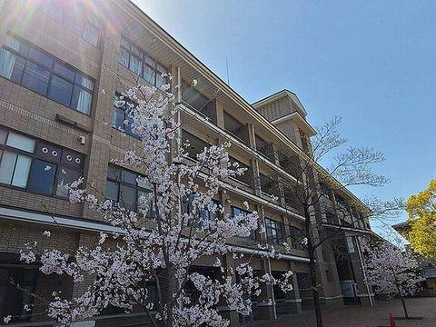
10代のうちにやっておくべきこと：18歳で変わる契約、バイト代と扶養の線、体とネットの守り方（2026年版） 15〜18歳でできるようになることの早見表、未成年者取消権と18・19歳の契約トラブル、闇バイトのサイン、選挙、2026年分から変わったバイト代と扶養の年収の線、高校・大学の授業料支援、睡眠と運動、HPVワクチン、SNSの被害と相談先、読書・英語・進路 調査日: -
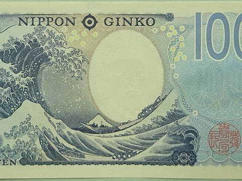
20代のうちにやっておきたいこと：年齢で決まる制度と、お金・健康・仕事の土台（2026年版） 20歳の国民年金と学生納付特例・追納、NISAとiDeCoの枠、20代の金融資産、奨学金と信用情報、子宮頸がん検診・歯周病検診・会社の健診、転職の傾向と若者向けの相談窓口、有給休暇と副業の申告、消費者トラブル、結婚の補助 調査日: -
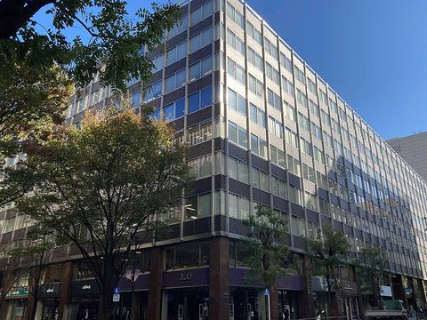
社会人1年目にやっておくこと：給与明細の見方、2年目に手取りが減る理由、入社1年の手続き（2026年版） 4月入社の1年の流れ、給与明細で引かれるものと料率、4月に保険料が引かれない理由、2年目6月からの住民税、4〜6月の給与で決まる社会保険料、親の扶養、有給休暇と相談窓口、国民年金の追納、奨学金の返還、1年目のふるさと納税、1年未満で辞めるときの注意 調査日: - 30代のうちにやっておきたいこと：40歳の前に知っておきたい制度と、家族・住まい・健康の備え（2026年版） 35歳のねんきん定期便と健診、iDeCo・NISAの改正、遺族年金と高額療養費の見直し、がん検診と不妊治療の年齢、賃金と転職の傾向、教育訓練休暇給付金、出産・育休・児童手当、住宅ローン減税と省エネ住宅の補助、40歳からの介護保険と親の介護への備え 調査日:
-
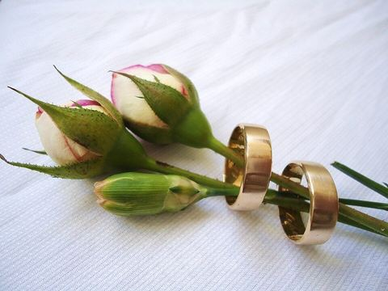
付き合ってから結婚するまでの流れ：顔合わせ・婚姻届・結婚後の手続きと、期間・お金の目安 交際期間（国の調査で平均4.3年）と婚姻件数・平均初婚年齢、出会いから新生活までの流れの図、プロポーズ・両家の顔合わせ・結納の実施率、婚約の法律上の扱い、婚姻届の条件とチェックリスト、結婚後の手続きと期限、結婚式の費用と新婚世帯の補助・贈与の非課税、2024〜2026年の変更 調査日: -
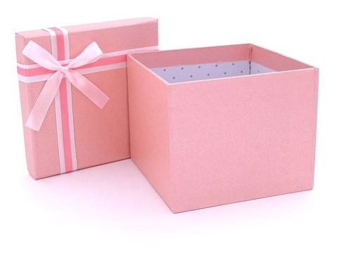
定年退職を迎えた親へのプレゼント：いまの定年の実態、親世代が喜ぶこと、相場とマナー 60歳定年と65歳までの雇用確保、60代の就業率、親世代が喜びを感じること（内閣府の調査）、百貨店のマナーの説明の違い、贈与税の110万円と祝物、ジパング倶楽部の2026年の変更、退職後の手続きの窓口 調査日:
暮らし・健康
-
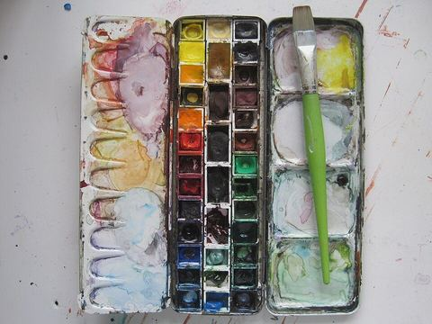
趣味の見つけ方：統計で見るみんなの趣味、始めやすさ、健康との関係と決まり 社会生活基本調査とレジャー白書で見るみんなの趣味、年代別の違い、屋内・屋外とひとり・仲間で分けた趣味の例、運動の実施率と国の目安、趣味と健康の研究（観察研究）、教養娯楽費、登山届・遊漁・ドローンなど始めるときの決まり 調査日: -
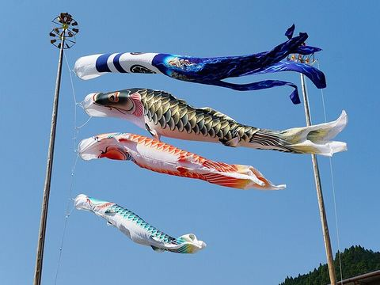
日本の祝日はどう決まる？ 振替休日と国民の休日の違い（2026・2027年の休日つき） 国民の祝日に関する法律と16の祝日、春分・秋分の日の決まり方と月曜日に移った祝日、振替休日と国民の休日のしくみと違い、祝日法の改正と2019〜2021年の特例、2026年・2027年の祝日と休日、会社・役所・銀行の休み 調査日: -
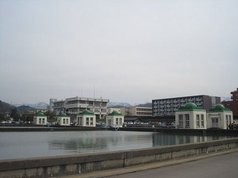
日本の水道水の安全性：水質基準と検査のしくみ、家庭で気をつけること 水道法と国の担当（2024年4月の移管）、水質基準52項目と主な基準値、検査の頻度と公表、浄水場のしくみと高度浄水処理、PFOS・PFOAの水質基準化（2026年4月）、受水槽・鉛製給水管・くみ置き・備蓄、普及率と水道管の老朽化 調査日: -
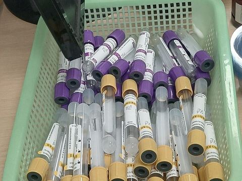
健康診断の結果の見方：数値の意味と再検査の目安（判定値の一覧つき） 定期健康診断・特定健診・人間ドックの違い、判定の言葉と基準範囲の意味、血圧・脂質・血糖・肝臓・腎臓の保健指導判定値と受診勧奨判定値、すぐ受診する目安、会社の義務と二次健康診断等給付、2027年4月からの項目の変更 調査日: - デスクワークの疲れを減らす方法：机・椅子・画面の目安、休憩のとり方、目と体のケア 画面との距離40cm以上・照度300ルクス以上などの目安、自宅で働くとき、1時間ごとの作業休止、座りすぎ対策とスタンディングデスクの根拠、座ったままできるストレッチ、目の疲れとドライアイの対策、ブルーライトカット眼鏡の根拠 調査日:
-
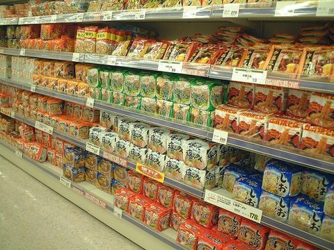
食品表示の読み方：パッケージの裏をどこから見るか（原材料・添加物・アレルギー・期限・栄養成分） 表示の義務がある売り方とない売り方、一括表示の見本と見る順番、原材料の並びと添加物、原料原産地と遺伝子組換え、アレルギー表示の9品目と2026年の変更、消費期限と賞味期限、食塩相当量と「ゼロ」「オフ」の基準、トクホと機能性表示食品 調査日: -
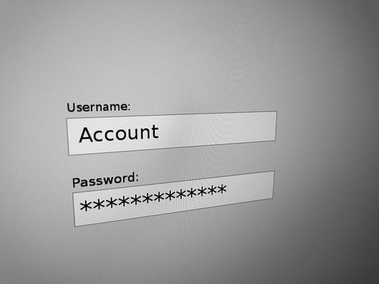
パスワード管理の基本：使い回しを防ぐ方法（管理ツール・2段階認証・パスキー） リスト型攻撃の仕組み、令和7年の不正アクセス7,190件と手口、強いパスワードの条件と定期変更が不要な理由、管理ツールと紙のメモ、2段階認証とパスキー、漏えいの確かめ方と漏れたときの対応、相談窓口 調査日: -
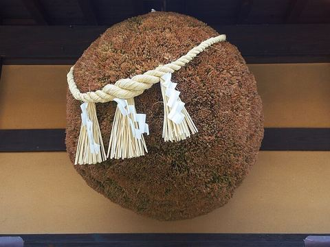
日本酒の基本と楽しみ方：種類・ラベル・保存・適量と、関西の酒蔵見学（2026年版） 純米・吟醸など8つの特定名称と普通酒の違い、ラベルの読み方と賞味期限がない理由、日本酒度・温度・酒器・料理との合わせ方、保存と開栓後の目安、厚労省ガイドラインに沿った適量とカロリー、酒税と小売価格、灘・伏見・大阪・奈良・滋賀の酒蔵見学の料金と予約 調査日: -
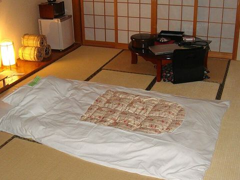
国の睡眠ガイドに沿った、睡眠の質を上げる方法 厚生労働省「睡眠ガイド2023」の6時間以上の目安と睡眠休養感、日本人の睡眠時間の実態、朝から夜までの工夫（光・スマホ・入浴・カフェイン・お酒）、よくある誤解、医師に相談する目安 調査日:
住まい・車・買い物
-
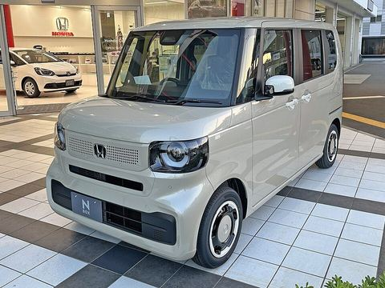
おすすめの車をデータで選ぶ：販売台数・安全性能・燃費・補助金で見る候補（2026年） 2025年の新車販売台数の上位10（登録車・軽）、自動車アセスメントの★5の車種、国の燃費一覧で見る燃費の良い車、電気自動車の補助金の車種別の額、踏み間違い防止装置の義務化、3つの軸に重なる車種 調査日: - メルカリやヤフオクで買うとお得なものは？ 中古向きの品目、避けたいもの、手数料と補償（2026年版） 個人間ECの市場規模2兆6,870億円、品目別の「中古で買ってもよい」割合（書籍63.5%など）、医薬品・コンタクトレンズ・PSマークのない製品など出品禁止のもの、中古品の事故とリコール、メルカリの支払い手数料と値下げ依頼、ヤフオクの自動入札、補償とトラブルの防ぎ方 調査日:
- スマートフォンの買い替え時期と費用：使用年数・OSの更新期限・電池の目安と、値引きのルール（2026年版） 平均使用年数4.6年と買い替えの理由、PixelやGalaxyのOS更新の年数、iPhoneの電池の目安、3Gの終了、iPhoneとPixelの公式の価格、端末値引きの上限4万円（税抜）と端末購入プログラム、中古の注意点と古い端末の手放し方 調査日:
-
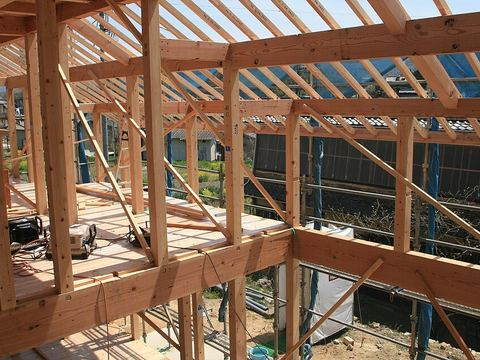
中古住宅の耐震性能の調べ方：建てた時期、書類、耐震診断、補助と税の制度（2026年版） 1981年6月と2000年6月の基準の節目と熊本地震の倒壊率、確認済証などの書類、インスペクションと耐震診断の違い、横浜市・神戸市・大阪市などの無料診断と改修の補助、住宅ローン減税、地震保険の割引、耐震化率 調査日: -
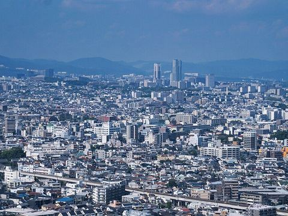
家を買うときに考えること（2026年版） 買うか借りるかの考え方、フラット35利用者の年収倍率、大阪・近畿の相場、住宅ローンと金利の現状、税金・諸費用・住宅ローン控除・補助金、買った後の費用、耐震とハザードマップの確認、契約の流れ、売るときの税金と相談先 調査日: -
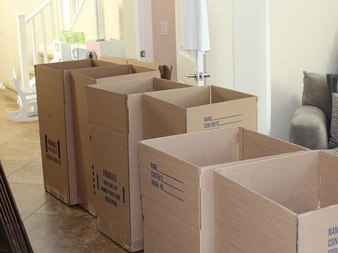
引っ越し費用を抑える方法と、春の繁忙期の相場のイメージ（2027年春） 3月は通常の月の約2倍という繁忙期の実態、通常期と繁忙期の料金の目安（民間の集計2つ）、見積もりとキャンセルのルール、単身パック・宅配便、仲介手数料と退去費用、手続きのタイムライン 調査日: -
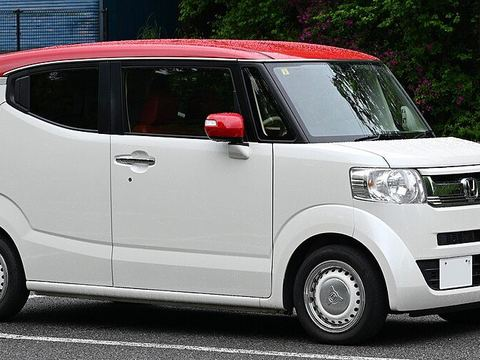
車を買う前に知っておきたいこと（2026年版） 選ぶ順番、2026年に変わった税金とEV補助金、軽・普通車・EVの違い、維持費の目安、残クレ・カーリース・中古車の注意点、安全性能の見方 調査日:
お金・税金
-
 会社員の確定申告（令和8年分）：申告が要る人・得する人、書類、スマホとe-Taxでの出し方
会社員が令和8年分（2027年2月16日〜3月15日）の確定申告を自分で出すための手引き。申告が必要な人と得する人、令和8年分の改正、医療費・ふるさと納税・株・副業、マイナポータル連携、スマホでのe-Tax、還付と納付、間違えたとき
調査日:
会社員の確定申告（令和8年分）：申告が要る人・得する人、書類、スマホとe-Taxでの出し方
会社員が令和8年分（2027年2月16日〜3月15日）の確定申告を自分で出すための手引き。申告が必要な人と得する人、令和8年分の改正、医療費・ふるさと納税・株・副業、マイナポータル連携、スマホでのe-Tax、還付と納付、間違えたとき
調査日:
- ふるさと納税のおすすめ返礼品：人気の分類と、届く時期・保存・量で選ぶ（2026年版） ポータル各社の2025年ランキングと民間調査から、よく選ばれる返礼品を紹介。米・肉・魚介・果物・日用品・宿泊・体験の代表17品の寄附額・量・届く時期・保存方法、今申し込むといつ届くか、返礼品のルールと一時所得、偽サイトの注意 調査日:
-
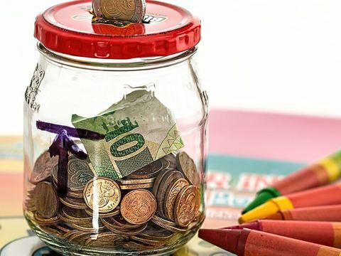
ボーナスの使い道：冬の平均額と手取りの目安、みんなの使い道、考える順番（2026年冬） 民間の平均支給額と2026年冬の予測、額面50万円の手取りの試算と所得税の率の決まり方、夏のボーナスの使い道の調査、金利の高い借入れ・先取り貯蓄・NISAとiDeCoの枠、個人向け国債とふるさと納税の年末の期限、もうけ話の勧誘への注意 調査日: -
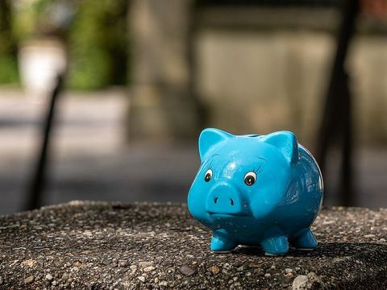
iDeCo・NISAの2027年改正まとめ：掛金上限の引き上げ、70歳までの加入、0歳からのNISA 働き方別のiDeCoの掛金上限（改正前→改正後）、増額の手続きと12月24日の締め切り、70歳までの加入、企業型DCのマッチング拠出と退職金の9年ルール、2027年1月からの0〜17歳のNISAと払出しのルール、まだ要望段階の項目 調査日: -
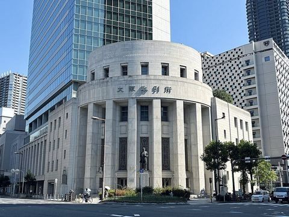
個人のシステムトレード入門：手法の種類と、研究で分かっていること（2026年版） 売買の規則を先に決めて守るやり方の種類、論文で分かっていること（バリューとモメンタム、トレンドフォロー、優待の先回り、効果が薄れた手法）、バックテストの落とし穴、税金・データ・発注の仕組み（特定の手法の推奨ではありません） 調査日: -
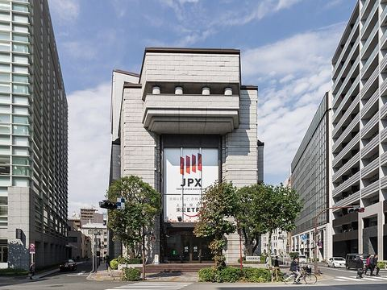
株主優待の基本と、暮らしに役立つ優待の例（2026年版） 権利付最終日・100株・継続保有と株主番号の基本、税金とNISA、長期保有の条件化や新設・廃止の動き、交通・食事・買い物などの優待の例、選ぶときの確認点（特定銘柄の推奨ではありません） 調査日: - ふるさと納税の2026年版（約10万円分を使う場合のイメージ） ポイント付与の禁止と経費基準の厳格化、10万円が上限内に収まる年収の目安と自分での確かめ方、ワンストップ特例の条件と期限、年末の締め切り、配分例とよくある失敗 調査日:
-
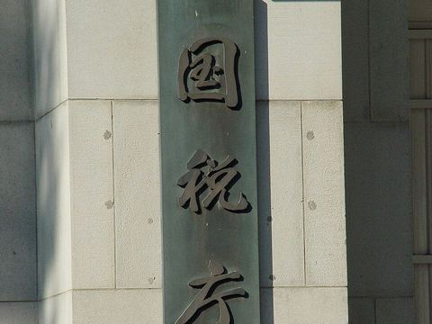
年末調整の書き方（2026年分・令和8年分） 基礎控除が最大104万円、家族の所得要件136万円、23歳未満の扶養親族の生命保険料控除6万円などの改正点、4つの申告書の書き方、控除額の早見表、年調ソフト、確定申告が必要なもの 調査日: -
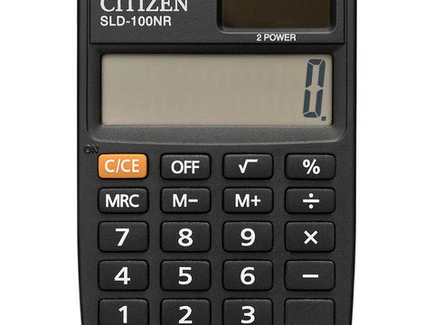
源泉徴収票の読み方（2026年分） まず見る4つの数字、税額が決まる流れ（年収500万円の計算例）、2026年分の変更点、確定申告が必要な人・税金が戻る人 調査日:
仕事・キャリア
-
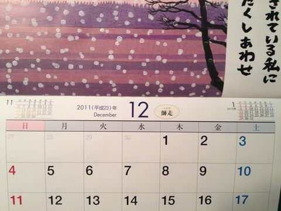
有給休暇の上手な使い方：半日・時間単位・計画年休と、2027年の連休のつなげ方 取得率66.9%と国の目標、付与日数の表、半日・時間単位・計画的付与の違いと年5日の義務での数え方、2027年に何日足せば何連休になるか、理由を言わなくてよいことや時季変更権・買い取り・退職前の消化、業種別の取得率、相談先 調査日: - ビジネスマナーの基本：敬語の指針と世論調査でわかる、根拠のあるマナーと根拠のない俗説 敬語の指針による5分類と「御苦労様」「とんでもございません」「させていただく」の扱い、社外に上司のことを話すときの言い方、「了解しました」に公的な根拠がないこと、世論調査の数字、メールと文書、クールビズの今、パワハラとカスハラ、検定 調査日:
- 会社の決算書の読み方：3つの表と5つの利益、平均と比べる指標（2026年版） 損益計算書・貸借対照表・キャッシュ・フロー計算書の読み方を任天堂の決算短信で解説、5段階の利益、利益と現金の違い、営業利益率・自己資本比率・ROEの式と業種別・規模別の平均、決算短信と有報と決算公告の時期 調査日:
-
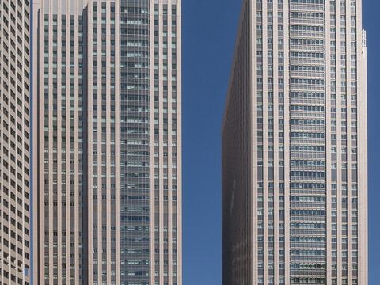
有価証券報告書から会社を調べる方法：EDINETの使い方と、従業員・リスク・株主の見方（2026年版） EDINETでの探し方と10年分の閲覧、どこに何が書いてあるかの早見表、2026年3月期から変わった「従業員の状況等」と平均年収の注意点（トヨタと三菱UFJの例）、多様性の指標、事業等のリスクと大株主、総会前の開示 調査日: -
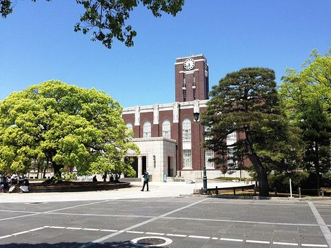
社会人でも参加できる大学の公開講座：5つの学び方の違い、費用の例、探し方（2026年版） 公開講座・履修証明プログラム・科目等履修生・BP・大学院入学の違い、受講者約93万人などの統計、東大・京大・阪大・慶應MCC・神戸大の講座の料金と形式、マナパスやJMOOCでの探し方、教育訓練給付などの支援 調査日: -
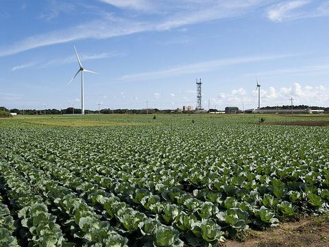
大人が参加できる職業体験：地方で働く、農林漁業、福祉の職場体験、トライアル雇用（2026年版） ふるさとワーキングホリデー・おためし地域おこし協力隊・協力隊インターン、農業体験の料金、無料の林業講習、漁業就業支援フェア、福祉・介護の職場体験、原則3か月のトライアル雇用、民間の職業体験サービス 調査日: -
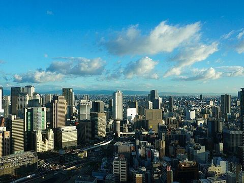
転職エージェントと転職サイトのしくみ、使い分け（2026年版） 許可制の有料職業紹介と届出制の求人サイトの違い、誰が手数料を払うか、2025年の転職者が使った方法、人材サービス総合サイトでの確認、お祝い金禁止などのルール、退職と雇用保険の手続き、相談先 調査日: -
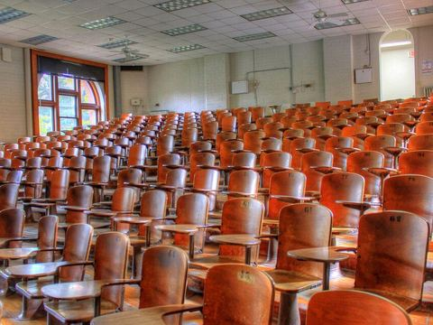
教育訓練給付の対象講座と受け取り方（2026年版） 一般20%・特定一般最大50%・専門実践最大80%の違い、受け取れる条件、検索システムでの探し方、IT・建設・語学・大学院の講座の例、2週間前の手続きと落とし穴 調査日:
資格・語学
-
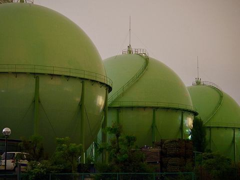
プラントの仕事に役立つ資格：法律で必要な資格の見分け方、試験・合格率・受験料と取る順番（2026年版） プラントで働く人向けに、法律で必要な資格と、あると評価される資格を分けて整理。ボイラー技士・高圧ガス・電験三種などの試験と合格率、技能講習の費用、施工管理技士の受検資格の見直し、溶接・非破壊試験・技術士、仕事別の取る順番の例 調査日: -
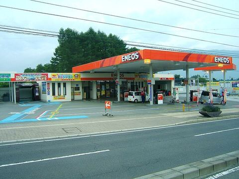
危険物取扱者乙4とは：できること、試験の中身と合格率、合格後の手続きと保安講習（2026年版） 乙4で扱える第4類の危険物（ガソリン・灯油など）と指定数量、甲・乙・丙の違いと立会い・危険物保安監督者、試験の科目と合格基準・手数料・電子申請、乙4の合格率の推移（令和元〜7年度）、免状の申請と保安講習、事故の傾向、2025〜2026年の変更 調査日: -
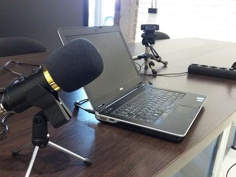
オンライン英会話を録音してAIで復習する方法：自分と相手の声を録る道具、文字起こし、AIでの添削、研究にもとづく復習のしかた（2026年版） レッスンを録音して文字に起こし、AIで添削してもらい、単語帳・音読で復習する流れ、Windows・Mac・iPhone・Androidで自分と相手の両方の声を録る方法、英会話サービスの録音の規約、Whisper・Wordなどの文字起こし、AIに入れたデータの扱い、指示文の例、書き起こし・間隔反復・シャドーイングの研究 調査日: -
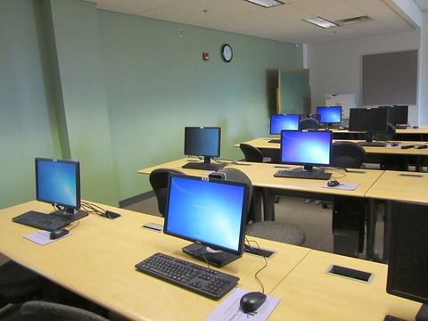
基本情報技術者試験の基本：科目A・Bの中身、合格率、2026年12月からの休止と新制度の案 試験の位置づけ（レベル2）、科目A・科目Bの時間・問題数・合格基準、2023年4月の変更、2026年12月28日からの一時休止と2027年1月下旬の再開予定、新制度の案、年度別の合格率、申込みと受験手数料、科目A免除、合格後の使い道 調査日: -
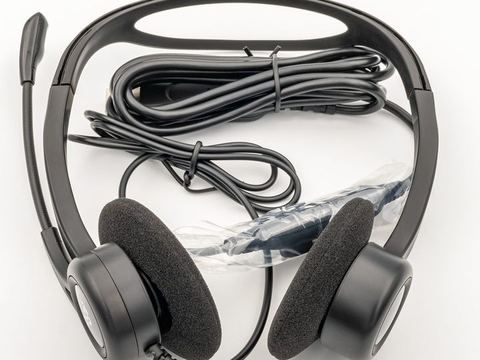
TOEIC Speaking Testとは：問題の形式、採点とスコア、受験料、申込みから結果まで（2026年） 11問・約20分の問題の形式、当日の流れと本人確認書類、採点のしくみと0〜200点のスコアの見方、受験料6,930円（税込）と日程、2025年度の平均点とL&Rとの関係、企業での使われ方、公式の準備方法 調査日: -
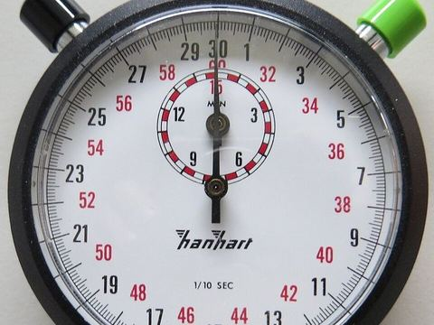
ITパスポート 直前1週間の勉強法：過去問道場の使い方と、記憶に残る解き方（2026年版） 読み返すより解くほうが1週間後の記憶に残る研究、過去問道場の3つの出題モードと「復習を開始」の使い方、分野別の収録問数、合格者が最も使った教材、600〜649点が最多の評価点分布、直前7日間の回し方、当日の時間配分と持ち物 調査日: - ITパスポートで覚えておくべき重要ポイント（シラバスVer.6.5） 計算問題の解き方（稼働率・損益分岐点・転送時間・2進数・クリティカルパス）、過去問から覚える用語、法律の数字、セキュリティの基本 調査日:
-
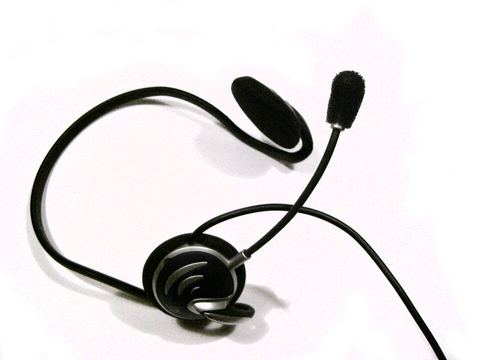
EF English Liveを効果的に受講する方法 レッスンの前・中・後にやること、研究で効果が確かめられた練習法、グループとプライベートの使い分け、1週間の受講モデル 調査日: - ITパスポートに1週間で合格するための勉強法 試験の仕組み、合格者データ、無料の公式教材、7日間の学習プラン。現行試験は2026年12月27日まで 調査日:
仕事・学習の道具
-
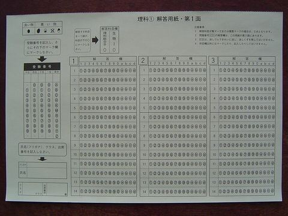
AIを使った資格試験の勉強法：過去問の解き直し・確かめ問題・暗記カードの作り方と、AIの間違いの確かめ方（2026年版） 研究と公式資料をもとに、AIを資格試験の勉強に使う流れを紹介。過去問を自分で解き、AIにはヒントを頼み、公式の解答で確かめ、暗記カードで間隔を空けて解き直す手順と指示文の例、本番の問題を漏らさない決まり、入力の設定と著作権 調査日: - 仕事でのAIの使い方の例：メール・要約・議事録・Excelなど場面別の指示文、書き方の型、使う前の決まりと確かめ方（2026年版） 生成AIの仕事での利用状況（令和8年版情報通信白書）、メール・要約・議事録・Excel・アイデア出し・翻訳・校正など場面別の使い方と指示文の例、指示文の書き方の型、社内ルールと入れてはいけない情報、出力の確かめ方、Office・Google Workspaceに組み込まれたAI、2025〜2026年の変化 調査日:
- ローカルLLMの始め方：自分のパソコンでAIを動かす利点と弱点、必要なメモリ、ツールとモデルの選び方（2026年版） ローカルLLMとクラウドのAIの違い、良い点と弱い点、必要なメモリ・VRAM・NPUの目安（Gemma 4・gpt-ossなどの公式の値）、Ollama・LM Studioなどのツールとモデルのライセンス、最初の会話までの手順、外からの接続や不審なモデルファイルの危険とAI法、2025〜2026年の動き 調査日:
- 定番ソフトのまとめ：用途別の無料・有料の選び方、費用の比べ方、2025〜2026年の値上げと終了 OS標準・無料・有料の3段で考える選び方と用途別の一覧表、Microsoft 365とOffice 2024の価格と5年の費用、PDF・画像・動画の無料と有料の例、総務省の見解にもとづくセキュリティ対策、ビデオ会議と保存容量、サブスクの相談件数と解約の注意、2025〜2026年の値上げ・終了・無料化 調査日:
-
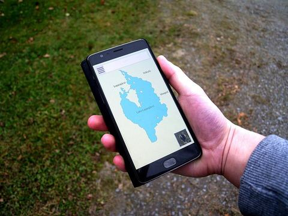
国や公的機関の無料ウェブツール：防災・地図・税・年金・調べものに使える23選と、偽サイトの見分け方 国・公的機関のウェブツール23件の用途別一覧（防災・地図・住まい・税・年金・医療・仕事・統計・法令・論文・翻訳）、使う前に確かめる3つの点、2026年5月からの新しい防災気象情報、確定申告のe-Tax利用率、偽メール・偽サイトの見分け方とフィッシングの件数、2024〜2026年に始まった・変わったこと 調査日: - オープンソースの便利なソフト：無料との違い、ライセンスの要点、用途別の代表例と安全な入れ方 オープンソースの定義と「無料」との違い、使うだけの人に関係するライセンスの要点、フランス政府のリスト（SILL）などで確かめる選び方、用途別の代表的なソフト12本の運営・ライセンス・最新版、行政での採用例、安全な入れ方と更新、2025〜2026年の動き 調査日:
- Obsidianと生成AIを組み合わせる方法：3つのやり方、費用、プライバシーの注意（2026年版） プラグインで使う・外のAIにフォルダを読ませる（MCP）・自分のパソコンでAIを動かすの3つのやり方、主なAIプラグインのダウンロード数と公式ディレクトリの評価、APIと月額プランの料金、入力が学習に使われるかの違い 調査日:
-
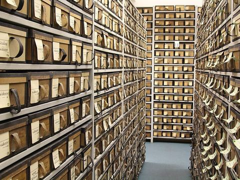
Obsidian（オブシディアン）の始め方と注意点：料金・同期・バックアップ（2026年版） ノートを端末内の Markdown ファイルで持つノートアプリの、無料の範囲と Sync・Publish の料金、インストールからノートをつなぐまで、主な機能、プラグインの安全上の注意、複数端末での同期、バックアップ、Notion・Evernote などとの違い、他アプリからの移行 調査日: - Navisworks Simulateの操作方法まとめ（2027版ヘルプ準拠） Manageとの違いと価格、ファイル形式（NWD・NWF・NWC）、ナビゲーション、選択・検索セット、断面・測定、TimeLinerの4D工程シミュレーション、Animator・Scripter、数量拾い、動画の書き出し 調査日:
おでかけ・旅行
- 謎解きのコツと練習法：よく出る謎の型、覚えておきたい表、行き詰まったときの考え方（2026年版） 謎検の公式の出題予告と出版社の説明、ローマ字・十二支などの公的な表、ひらめきの心理学の研究から、謎解きのコツと練習法を紹介。よく出る謎の型と自作の例題4問、行き詰まったときの考え方、チームでの進め方、公式の練習教材と価格 調査日:
-
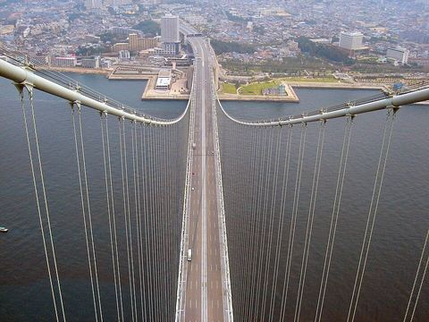
関西の工場見学・社会科見学：兵庫・大阪を中心に、料金・予約・試飲と、無料で行ける施設（2026年版） 兵庫・大阪を中心に京都も少し。キリン神戸工場（2026年10月から1,000円）・アサヒ吹田などの試飲つき見学、造幣局・舞洲工場・京都御所など無料の施設、明石海峡大橋の塔頂ツアー、予約の受付開始日と本人確認書類、日銀大阪支店の見学休止 調査日: -
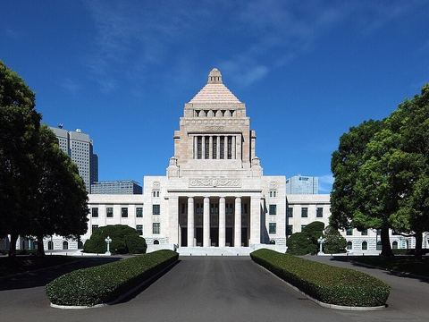
関東の工場見学・社会科見学：東京・神奈川を中心に、料金・予約・試飲と、国の施設の見学（2026年版） 東京・神奈川を中心に埼玉・千葉・茨城・群馬も少し。キリン横浜工場（2026年10月から1,000円）・YEBISUの試飲つきツアー、森永・味の素・崎陽軒の無料の工場見学、乗り物の博物館、国会・迎賓館・日本銀行・お札の工場・皇居・最高裁の見学、予約の時期と年齢の条件 調査日: -
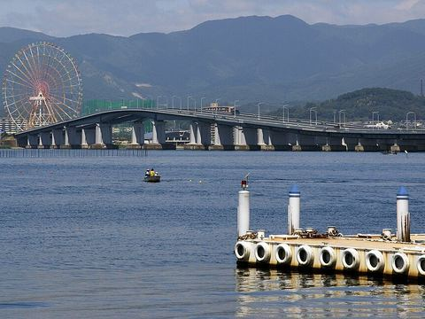
ビワイチの始め方：距離と日程、自転車の借り方・運び方、滋賀県の決まり（2026年版） 国のルートの193kmと北湖一周の約150km、反時計回りと路面の青線、日程の例、米原駅・大津港のレンタサイクルと近江鉄道・船での運び方、滋賀県の自転車保険の義務とビワイチ推進条例、サポートステーションと認定証、季節と天気、体験者数 調査日: -
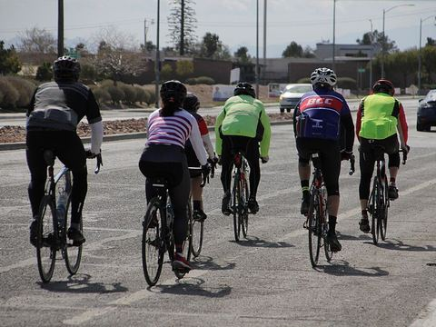
ロードバイクの始め方：選び方・費用・装備と、2026年4月からの自転車の交通ルール クロスバイクとの違いと各部の名前、身長とサイズ、完成車の価格の例、ヘルメットの努力義務と着用率、ライト・防犯登録・自転車保険の決まり、2026年4月からの青切符と反則金、車が自転車の横を通るときの決まり、輪行とナショナルサイクルルート、点検 調査日: -
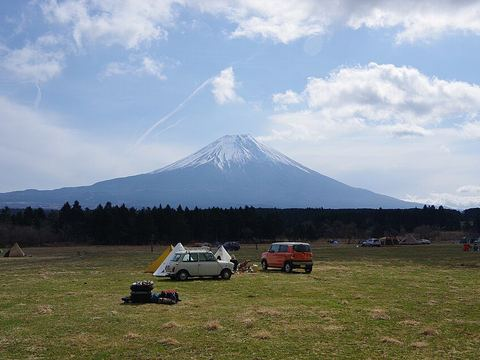
キャンプの始め方：形と費用、道具、火・一酸化炭素・川・クマの安全と決まり オートキャンプの数字、サイトの種類と国営公園などの料金の例、テントを張ってよい場所、2026年1月からの林野火災注意報・警報とたき火、テントの中の一酸化炭素、川の増水と天気、クマとマダニ、肉の加熱、刃物の持ち歩き 調査日: - 国内旅行の行き先をデータで選ぶ：人気の地域と混む時期、世界遺産・温泉、2026年の宿泊税と料金 宿泊旅行統計で見る人が多く泊まる都道府県と混む月・空く月、旅行の費用と北陸新幹線の所要時間、2026年の宿泊税と富士山・姫路城などの料金、世界遺産・国立公園・温泉・国宝の多い地域、桜と紅葉の平年日 調査日:
- 海外旅行の行き先を選ぶ：渡航者数の統計、事前の入国申請、安全と費用の決まり（2026年版） 出国日本人数の推移、2026年7月の出国税の引き上げと旅券手数料の値下げ、ESTA・ETA・EES・K-ETA などの事前の入国申請、アジアのオンライン到着カード、危険情報と海外邦人援護の統計、燃油サーチャージと現地の観光税 調査日:
-
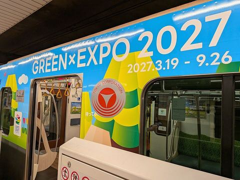
GREEN×EXPO 2027ガイド：会期、チケットの値段、3つの予約、会場への行き方（横浜の国際園芸博覧会） 2027年3月19日〜9月26日の会期と見どころ、券種ごとの値段と早割の期限、入場・シャトルバス・駐車場の予約、4駅からのシャトルバスと駐車場の料金、上瀬谷ラインがない理由、持ち込めないもの、建設費と運営費、まだ決まっていないこと 調査日: -
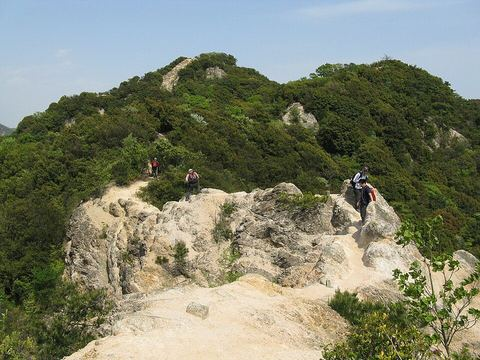
六甲全山縦走ガイド：4つの区間、途中で下りる方法、大会の条件と安全（2026年版） 公称56kmと実測の違い、神戸市が分ける4つの区間と難所、まやビューライン・六甲ケーブルで途中から下りる方法、大会の定員・参加料・関門の時刻と完走率、遭難の原因と日の入り、イノシシ・クマ・マダニ、装備 調査日: -
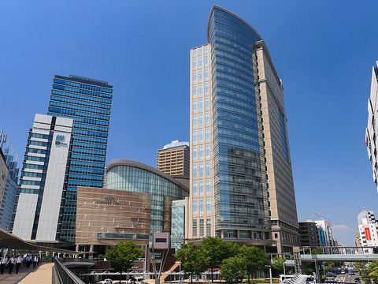
川崎駅周辺と川崎大師で食べたい店：老舗と名物、観光協会が紹介する店（2026年版） 川崎市観光協会が紹介する川崎駅周辺の老舗（とんかつ和幸の本店、1955年創業のイタリア料理、1914年創業の蕎麦など）、ニュータンタンメン・クラフトビール・カフェ、川崎大師の久寿餅・とんとこ飴・わらび餅、かわさき名産品のおみやげ 調査日: -
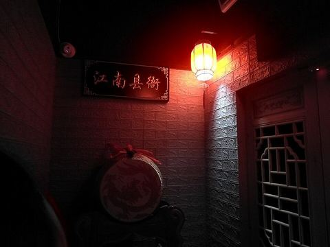
謎解きゲームの主な団体と、初めての遊び方（2026年版） SCRAP・タカラッシュ・NAZO×NAZO劇団・よだかのレコード・RIDDLERなど主な団体の特徴、ルーム型・ホール型・街歩き・キットの形式と料金の目安、東京ミステリーサーカスなどの常設店、学生団体と自治体のコラボ、初めて参加するときの決まりごと、謎検 調査日: -
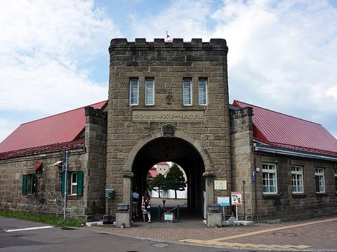
工場見学（北海道・中部・広島・九州・沖縄）：試飲つきの蒸溜所、お菓子の工場、車の組立ライン（2026年版） 北海道・中部・広島・九州・沖縄の工場見学。ニッカ余市蒸溜所の無料の試飲、サッポロ・オリオンのビール工場、白い恋人パーク、マツダの組立工場、トヨタの3施設、リニア・鉄道館など（関東・関西は地域別の記事へ） 調査日: - WESTERポイント関西・北陸フリーパスの注意点と、北陸3日間の観光・グルメ 6,000ポイントで3日間乗り放題。対象外の路線、払い戻し、冬の運休、駅から行ける観光地と名物の店、モデルコース 調査日:
身近な科学
- なぜ国によってコンセントの形が違う？ 電圧・周波数・プラグの違いと、海外で使うときの注意 プラグの型（A〜Oの15種類）と国ごとの違い、国際規格が広まらなかった経緯、主な国の電圧・周波数の表、日本の50Hzと60Hzの歴史と周波数変換所、日本のコンセントとPSEマーク、変換プラグと変圧器の違い 調査日:
- 水素エネルギーとは？ 作り方・ため方・燃料電池の仕組みと、日本の目標 水素の性質とグレー・ブルー・グリーンの呼び方、低炭素水素の基準、水電解などの作り方、圧縮・液化・MCH・アンモニアでの貯蔵と輸送、燃料電池の仕組みとエネファーム・MIRAI、水素基本戦略と水素社会推進法、コストと効率の課題 調査日:
- 潜水艦はどうやって浮いたり沈んだりする？ 浮力・バラストタンクと、しんかい6500との違い アルキメデスの原理と浮力、深さと水圧の表、バラストタンクへの注水と高圧空気での排水、海上自衛隊のたいげい型・そうりゅう型の公開情報、しんかい6500がおもりで潜って浮く仕組み、潜水艦救難艦 調査日:
- エアバッグはなぜ一瞬で膨らむ？ 仕組みと、正しく効かせるための乗り方 衝突の検知から膨らんでしぼむまでの流れ、膨らむ条件と種類、シートベルトとの関係と着用・非着用の致死率、正しい乗り方と子どもの座席、タカタ製エアバッグのリコール、保安基準と衝突被害軽減ブレーキの義務化 調査日:
- 飛行機の窓にはなぜ小さな穴がある？ 窓・与圧・座席に隠れた航空機の安全設計 客室の窓のパネルと小さな穴の役割、窓の角が丸い理由とコメット機の事故、上空の気圧と与圧・酸素マスク、離着陸時の日よけ・背もたれ・シートベルトの理由、脱出90秒・座席16g・雷・ETOPS、モバイルバッテリーの新ルール、事故率 調査日:
- トンネルを掘っても地上の建物が崩れないのはなぜ？ 工法・支え方・計測と、陥没事故の教訓 掘ると地中で起きること（土圧・水圧・アーチの働き）、NATM・シールド・開削・推進の使い分け、シールド工法の支え方、沈下の計測と家屋調査、大深度地下の定義、外環・博多駅前・新横浜の陥没の原因と教訓 調査日:
- データセンターとは？ 中の設備、電気と冷却、日本の立地と最新の動き データセンターの定義と種類、受電・UPS・発電機・冷却・通信の設備、液冷などの冷却、世界と日本の電力消費の見通し（IEA・広域機関）、PUEと省エネ法の新しい基準、立地の集中とGX戦略地域、電力・水・廃熱の課題 調査日:
- 核融合発電は実現できるのか？ 仕組み、必要な条件、ITERと日本の計画、世界の記録、残る課題（2026年版） 重水素と三重水素の反応と燃料1gで石油約8トン分のエネルギー、1億度以上などの条件、ITERの新計画（燃料の運転は2039年）、日本の「2030年代の発電実証」目標と原型炉案、NIFの点火やJETの69MJ、民間企業の目標、三重水素・材料・コスト・規制の課題 調査日:
- 雲の種類で天気が分かるのはなぜ？ 雲のでき方、十種雲形、前線と雲の順番、天気のことわざ 空気が上がって冷えると雲ができる仕組み、高さと形で10種類に分ける十種雲形、温暖前線が近づくと雲が低く厚くなる理由、積乱雲が近づくサインと雷までの距離、「かさが出ると雨」などのことわざの理屈、気象台の目視観測の自動化 調査日:
- 人間の体温はなぜ約37℃なのか：37℃の由来、体温を保つ仕組み、平熱の実際と測り方 37℃という数字の由来、熱をつくる・逃がす仕組みと1日のリズム、カビを防ぐ効果とエネルギーのコストで36.7℃になるという研究、日本人の平熱（1957年36.89℃、2019年36.47℃）、「発熱」37.5℃以上の定義、熱中症と低体温症、体温計の使い方 調査日:
プラント・工場設備
- プラント建設工事の全体的な流れ：準備工事から据付・配管・検査・試運転まで 着工前の許可と届出、杭・基礎・鉄骨、大型クレーンでの据付とモジュール工法、配管・電気計装・保温塗装と耐圧試験、完成検査・落成検査、試運転への引き渡し、現場の安全管理と1日の流れ、規模の例 調査日:
- プラント業界の仕事の進め方：プロジェクトの流れ、契約の形、チームの体制、調達と建設、管理の手法 FS・FEED・入札から設計・調達・建設・試運転・引き渡し・保証期間までの流れ、ランプサムと実費精算などの契約の形、プロジェクトマネージャーを頂点とする体制、調達と建設の進め方、WBS・クリティカルパス・アーンドバリュー、見積りの精度、LNGプラントの期間の例、海外勤務 調査日:
- プラント業界で使われる英語の略語一覧：約80語を分野別に（契約・設計・安全・計装・検査・保全・規格） EPC・FEED・LSTK・FID・P&ID・HAZOP・SIL・SIS・DCS・PLC・FIC・NDT・FAT・RBI・ASME・APIなど約80語を7分野に分け、英語の正式名と意味を整理。計装の記号の読み方とまぎらわしい略語も 調査日:
- プラント設計で使われる専門用語100選：配管・バルブ・機器・設計条件・配置・計装・図面 呼び径・配管クラス・フランジ・スチームトラップ・玉形弁・安全弁・多管式熱交換器・キャビテーション・設計圧力・耐圧試験・防液堤・保有空地・インターロック・危険場所の区分・アイソメ図など100語を、法令や公的な解説をもとに説明 調査日:
- プラントとは何かを分かりやすく解説：工場との違い、種類、中にある設備、プラントの一生、日本のどこにあるか 装置産業という考え方、製油所19か所・エチレンプラント12基・ごみ焼却施設991施設などの種類と数、中にある設備、許可・完成検査・保安検査・定期修理・廃止というプラントの一生、全国76地区の特別防災区域、働く人と安全の仕組み 調査日:
- 化学プラントの基本構成と仕組み：原料から製品までの流れ、主な装置、蒸留とエチレン製造、制御と安全 前処理・反応・分離精製という流れ、蒸留塔・反応塔・熱交換器・加熱炉・バルブなどの役割、製油所の常圧蒸留とナフサ分解によるエチレン製造、DCSと安全計装、PFD・P&ID・配管図、高圧ガス保安法と消防法、コンビナート事故の統計 調査日:
- プラントの3Dモデルはどう作られるのか？ 設計の流れ、仕様とカタログ、図面の書き出し、点群による既設の3D化、主なソフト 数千〜数万本の配管を3Dで配置する理由、30%・60%・90%のモデルレビュー、カタログとスペックで部品を選ぶ仕組み、アイソメ図を3Dモデルから書き出す仕組み、レーザースキャナーの点群、AVEVA E3D・Forte 3D・Plant 3D・Navisworks、日本の会社の自動設計 調査日:
- プラントエンジニアリングとは：EPCの仕組み、業界の規模と主な会社、仕事の流れと3D設計（2026年版） EPC・FEED・一括請負の意味、業界の受注高32兆円の内訳、日揮HD・千代田化工建設・東洋エンジニアリングの売上と受注残高、仕事の流れと職種、3D設計とデジタルツイン、海外駐在と資格の合格率、脱炭素と大型案件の損失 調査日:
社会人お得技ノート（全8回）
社会人が使える制度・割引・控除を分野別にまとめたシリーズです。2026年の制度改正も反映しています。
- 社会人お得技ノート① 放送大学で学生身分を得る 放送大学の学生になって学割・図書館を使う 調査日:
- 社会人お得技ノート② 税金・控除 特定支出控除、医療費控除、2026年の税制改正など 調査日:
- 社会人お得技ノート③ 社会保険・年金・雇用保険 iDeCo改正、国民年金、退職時の社会保険、教育訓練給付など 調査日:
- 社会人お得技ノート④ 医療 高額療養費の改定、付加給付、長期収載品、申請しないともらえない給付 調査日:
- 社会人お得技ノート⑤ 交通・旅行 JRの割引制度、株主優待券、ETC割引、旅行支援、海外決済 調査日:
- 社会人お得技ノート⑥ 通信・サブスク・クレカ・ポイント 格安SIMの維持費、ファミリープラン、カード還元率の改定 調査日:
- 社会人お得技ノート⑦ 住まい・金融・福利厚生 住宅ローン控除、家賃補助、個人向け国債、奨学金の代理返還 調査日:
- 社会人お得技ノート⑧ 図書館・学習・資格試験 国立国会図書館の個人送信、英検・TOEICの割引、資格取得補助 調査日:
記事一覧の写真の出典（97件）
記事一覧の小さな写真は、各記事の最初の写真の中央を切り抜いて縮小したものです。
- 10代のうちにやっておくべきこと の写真
写真: Llumynia／Wikimedia Commons（CC BY-SA 4.0） - 20代のうちにやっておきたいこと の写真
写真: Heavy Frisker／Wikimedia Commons（CC BY-SA 4.0） - 社会人1年目にやっておくこと の写真
写真: Van2van／Wikimedia Commons（CC BY 4.0） - 30代のうちにやっておきたいこと の写真
写真: rawpixel.com／Wikimedia Commons（CC0） - 付き合ってから結婚するまでの流れ の写真
写真: Mauro Cateb／Wikimedia Commons（CC BY-SA 3.0） - 定年退職を迎えた親へのプレゼント の写真
写真: Jpquidores／Wikimedia Commons（CC BY-SA 3.0） - 趣味の見つけ方 の写真
写真: 100wass／Wikimedia Commons（CC BY-SA 4.0） - 日本の祝日はどう決まる？ の写真
写真: 663highland／Wikimedia Commons（CC BY 2.5） - 日本の水道水の安全性 の写真
写真: Hirorinmasa／Wikimedia Commons（CC BY-SA 3.0） - 健康診断の結果の見方 の写真
写真: Fumikas Sagisavas／Wikimedia Commons（CC0） - デスクワークの疲れを減らす方法 の写真
写真: www.Pixel.la Free Stock Photos／Wikimedia Commons（CC0） - 食品表示の読み方 の写真
写真: Kanesue／Wikimedia Commons（パブリックドメイン） - パスワード管理の基本 の写真
写真: Santeri Viinamäki／Wikimedia Commons（CC BY-SA 4.0） - 日本酒の基本と楽しみ方 の写真
写真: Celuici／Wikimedia Commons（CC BY-SA 3.0） - 国の睡眠ガイドに沿った、睡眠の質を上げる方法 の写真
写真: David McKelvey／Wikimedia Commons（CC BY 2.0） - おすすめの車をデータで選ぶ の写真
写真: Tokumeigakarinoaoshima／Wikimedia Commons（CC BY-SA 4.0） - メルカリやヤフオクで買うとお得なものは？ の写真
写真: Nenad Stojkovic／Wikimedia Commons（CC BY 2.0） - スマートフォンの買い替え時期と費用 の写真
写真: Artem Beliaikin／Wikimedia Commons（CC BY 2.0） - 中古住宅の耐震性能の調べ方 の写真
写真: メルビル／Wikimedia Commons（CC BY 3.0） - 家を買うときに考えること（2026年版） の写真
写真: 掬茶／Wikimedia Commons（CC BY-SA 4.0） - 引っ越し費用を抑える方法と、春の繁忙期の相場のイメージ（2027年春） の写真
写真: MoveON moving／Wikimedia Commons（CC BY-SA 4.0） - 車を買う前に知っておきたいこと（2026年版） の写真
写真: TTTNIS／Wikimedia Commons（CC0（パブリックドメイン）） - 会社員の確定申告（令和8年分） の写真
写真: Ebiebi2／Wikimedia Commons（CC BY-SA 4.0） - ふるさと納税のおすすめ返礼品 の写真
写真: Blue Lotus／Wikimedia Commons（CC BY 2.0） - ボーナスの使い道 の写真
写真: stevepb／Wikimedia Commons（CC0） - iDeCo・NISAの2027年改正まとめ の写真
写真: Dietmar Rabich／Wikimedia Commons（CC BY-SA 4.0） - 個人のシステムトレード入門 の写真
写真: Sakai Yayoi／Wikimedia Commons（CC0） - 株主優待の基本と、暮らしに役立つ優待の例（2026年版） の写真
写真: Kakidai／Wikimedia Commons（CC BY-SA 4.0） - ふるさと納税の2026年版（約10万円分を使う場合のイメージ） の写真
写真: rikky_photography／Wikimedia Commons（CC BY 4.0） - 年末調整の書き方（2026年分・令和8年分） の写真
写真: っ／Wikimedia Commons（CC BY-SA 3.0） - 源泉徴収票の読み方（2026年分） の写真
写真: LoMit／Wikimedia Commons（CC BY-SA 4.0） - 有給休暇の上手な使い方 の写真
写真: Ph0kin／Wikimedia Commons（CC BY-SA 4.0） - ビジネスマナーの基本 の写真
写真: Breather／Wikimedia Commons（CC0） - 会社の決算書の読み方 の写真
写真: Dave Dugdale／Wikimedia Commons（CC BY-SA 2.0） - 有価証券報告書から会社を調べる方法 の写真
写真: Rs1421／Wikimedia Commons（CC BY-SA 3.0） - 社会人でも参加できる大学の公開講座 の写真
写真: Soraie8288／Wikimedia Commons（CC BY-SA 4.0） - 大人が参加できる職業体験 の写真
写真: Σ64／Wikimedia Commons（CC BY 3.0） - 転職エージェントと転職サイトのしくみ、使い分け（2026年版） の写真
写真: SH6188／Wikimedia Commons（CC BY-SA 4.0） - 教育訓練給付の対象講座と受け取り方（2026年版） の写真
写真: Yinan Chen／Wikimedia Commons（パブリックドメイン） - プラントの仕事に役立つ資格 の写真
写真: IketaniDaisei／Wikimedia Commons（CC BY-SA 4.0） - 危険物取扱者乙4とは の写真
写真: KDashy／Wikimedia Commons（パブリックドメイン） - オンライン英会話を録音してAIで復習する方法 の写真
写真: Антон Пищулин／Wikimedia Commons（CC BY-SA 4.0） - 基本情報技術者試験の基本 の写真
写真: Antonio Chaves／Wikimedia Commons（CC BY-SA 4.0） - TOEIC Speaking Testとは の写真
写真: PantheraLeo1359531／Wikimedia Commons（CC BY 4.0） - ITパスポート 直前1週間の勉強法 の写真
写真: StefanPohl at German Wikipedia／Wikimedia Commons（パブリックドメイン） - ITパスポートで覚えておくべき重要ポイント（シラバスVer.6.5） の写真
写真: Brion Testaccount／Wikimedia Commons（CC BY-SA 3.0） - EF English Liveを効果的に受講する方法 の写真
写真: Zephyris at English Wikipedia／Wikimedia Commons（CC BY-SA 3.0） - ITパスポートに1週間で合格するための勉強法 の写真
写真: Shixart1985／Wikimedia Commons（CC BY 2.0） - AIを使った資格試験の勉強法 の写真
写真: Genppy／Wikimedia Commons（パブリックドメイン） - 仕事でのAIの使い方の例 の写真
写真: Pixel.la Free Stock Photos／Wikimedia Commons（CC0） - ローカルLLMの始め方 の写真
写真: The indian dev／Wikimedia Commons（CC BY-SA 4.0） - 定番ソフトのまとめ の写真
写真: freddie marriage／Wikimedia Commons（CC0） - 国や公的機関の無料ウェブツール の写真
写真: Santeri Viinamäki／Wikimedia Commons（CC BY-SA 4.0） - オープンソースの便利なソフト の写真
写真: Free-Photos（Pixabay）／Wikimedia Commons（CC0） - Obsidianと生成AIを組み合わせる方法 の写真
写真: www.Pixel.la Free Stock Photos／Wikimedia Commons（CC0） - Obsidian（オブシディアン）の始め方と注意点 の写真
写真: Michiel Streijger／Wikimedia Commons（CC BY 4.0） - 謎解きのコツと練習法 の写真
写真: Niabot／Wikimedia Commons（CC BY-SA 3.0） - 関西の工場見学・社会科見学 の写真
写真: PlusMinus／Wikimedia Commons（CC BY-SA 3.0） - 関東の工場見学・社会科見学 の写真
写真: Wiiii／Wikimedia Commons（CC BY-SA 3.0） - ビワイチの始め方 の写真
写真: 663highland／Wikimedia Commons（CC BY 2.5） - ロードバイクの始め方 の写真
写真: Noah Wulf／Wikimedia Commons（CC BY-SA 3.0） - キャンプの始め方 の写真
写真: irisgazer／Wikimedia Commons（パブリックドメイン） - 国内旅行の行き先をデータで選ぶ の写真
写真: Midori／Wikimedia Commons（CC BY 3.0） - 海外旅行の行き先を選ぶ の写真
写真: U.S. Department of Agriculture／Wikimedia Commons（パブリックドメイン） - GREEN×EXPO 2027ガイド の写真
写真: ジョジョの珍妙な冒険／Wikimedia Commons（CC0） - 六甲全山縦走ガイド の写真
写真: KENPEI／Wikimedia Commons（CC BY-SA 3.0） - 川崎駅周辺と川崎大師で食べたい店 の写真
写真: MaedaAkihiko／Wikimedia Commons（CC BY-SA 4.0） - 謎解きゲームの主な団体と、初めての遊び方（2026年版） の写真
写真: 深鸣／Wikimedia Commons（CC BY-SA 4.0） - 工場見学（北海道・中部・広島・九州・沖縄） の写真
写真: 663highland／Wikimedia Commons（CC BY 2.5） - WESTERポイント関西・北陸フリーパスの注意点と、北陸3日間の観光・グルメ の写真
写真: Toshinori baba／Wikimedia Commons（CC BY-SA 4.0） - なぜ国によってコンセントの形が違う？ の写真
写真: FF-UK／Wikimedia Commons（CC BY-SA 4.0） - 水素エネルギーとは？ の写真
写真: Syced／Wikimedia Commons（CC0） - 潜水艦はどうやって浮いたり沈んだりする？ の写真
写真: 防衛省／Wikimedia Commons（CC BY 4.0） - エアバッグはなぜ一瞬で膨らむ？ の写真
写真: David Perez／Wikimedia Commons（CC BY-SA 3.0） - 飛行機の窓にはなぜ小さな穴がある？ の写真
写真: Marcelomenezes96／Wikimedia Commons（CC BY 4.0） - トンネルを掘っても地上の建物が崩れないのはなぜ？ の写真
写真: Bärbel Miemietz／Wikimedia Commons（CC BY-SA 4.0） - データセンターとは？ の写真
写真: PiDatacenters／Wikimedia Commons（CC BY-SA 4.0） - 核融合発電は実現できるのか？ の写真
写真: National Institute for Fusion Science／Wikimedia Commons（CC BY-SA 4.0） - 雲の種類で天気が分かるのはなぜ？ の写真
写真: Rasbak／Wikimedia Commons（CC BY-SA 3.0） - 人間の体温はなぜ約37℃なのか の写真
写真: Jacek Halicki／Wikimedia Commons（CC BY-SA 4.0） - プラント建設工事の全体的な流れ の写真
写真: Pbujair／Wikimedia Commons（CC BY-SA 4.0） - プラント業界の仕事の進め方 の写真
写真: Calistemon／Wikimedia Commons（CC BY-SA 4.0） - プラント業界で使われる英語の略語一覧 の写真
画像: Ub／Wikimedia Commons（CC BY-SA 3.0） - プラント設計で使われる専門用語100選 の写真
写真: Dietmar Rabich／Wikimedia Commons（CC BY-SA 4.0） - プラントとは何かを分かりやすく解説 の写真
写真: ccfarmer／Wikimedia Commons（CC BY 3.0） - 化学プラントの基本構成と仕組み の写真
写真: CEphoto, Uwe Aranas／Wikimedia Commons（CC BY-SA 3.0） - プラントの3Dモデルはどう作られるのか？ の写真
写真: PEO ACWA／Wikimedia Commons（CC BY 2.0） - プラントエンジニアリングとは の写真
写真: Kaz Ish／Wikimedia Commons（CC BY-SA 3.0） - 社会人お得技ノート① 放送大学で学生身分を得る の写真
写真: 掬茶／Wikimedia Commons（CC BY-SA 3.0） - 社会人お得技ノート② 税金・控除 の写真
写真: Ebiebi2／Wikimedia Commons（CC BY-SA 4.0） - 社会人お得技ノート④ 医療 の写真
写真: Muyo／Wikimedia Commons（CC BY-SA 4.0） - 社会人お得技ノート⑤ 交通・旅行 の写真
写真: Charlie fong／Wikimedia Commons（CC BY-SA 4.0） - 社会人お得技ノート⑥ 通信・サブスク・クレカ・ポイント の写真
写真: RuinDig/Yuki Uchida／Wikimedia Commons（CC BY 4.0） - 社会人お得技ノート⑦ 住まい・金融・福利厚生 の写真
写真: Peka／Wikimedia Commons（CC BY-SA 4.0） - 社会人お得技ノート⑧ 図書館・学習・資格試験 の写真
写真: Uploader; Vantey／Wikimedia Commons（CC BY-SA 3.0）